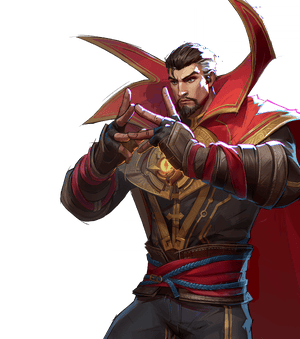
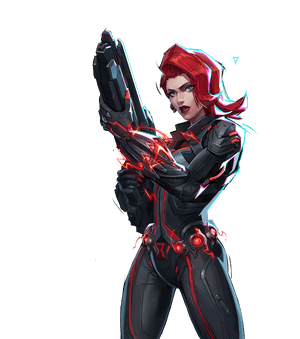

Welcome to the knockoff rivals wiki!
This is all for a class project.
Thor is a vanguard who specalizes in frontline brawl and backline dive. He has good displacement and movement with high burst damage.

Doctor Strange is a vanguard who gets most of his value through his large high health shield. His offensive capabilities shine in group areas when his charge is at max.

Black Widow is a duelist who does well at poke tactics. She has infinite sprint with a high jump allowing for repositioning. Her crowd control allows her to protect backline.
